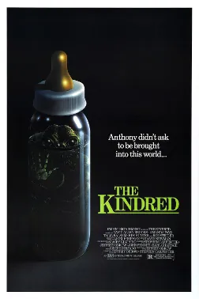

The genetics
Genetic experimentation drives the whole story. Amanda Hollins, presented as a great geneticist, pursued what the film calls an advancement in human evolution in her home laboratory, creating monstrous beings including John's tentacled 'brother' Anthony; her dying wish to destroy her notes signals that she regrets the work. Dr. Phillip Lloyd is a classic mad scientist who wants her results and runs his own experiments on kidnapped people, feeding an accomplice to modified mutants. The genetics is not explained in any detail: it serves as the source of creature effects in a mid-1980s horror film in the vein of Re-Animator, and the human-animal hybrids it shows have no basis in real science.
How genetics is portrayed
- Overall portrayal of genetics
- negative Genetic research appears as a source of monsters, regretted by its creator and coveted by a mad scientist who is destroyed by it.
- Outcome of the genetic intervention
- negative The experiments produce uncontrollable monsters, deaths and Melissa's transformation into a fish-like creature.
- Dr. Amanda Hollins
- ambivalent Aim: curiosity (neutral). A renowned geneticist who sought an 'advancement in human evolution' in her home laboratory; her experiments produced monsters, including John's tentacled brother, and on her deathbed she asks for her notes to be destroyed, a scientist whose work got out of hand rather than a villain.
- Dr. Phillip Lloyd
- villain Aim: power, curiosity (negative). The film's mad scientist kidnaps people for experiments, feeds an accomplice to modified mutants and wants Amanda's work for himself; he ends raving about science and is dragged away by a tentacle.
The story
Dr. Amanda Hollins, a renowned geneticist, is dying and makes her son John promise to destroy the laboratory notes of her last experiment; she also tells him that he has a brother, Anthony. John is sceptical. After the funeral, where he meets Melissa Leftridge, who claims to be Amanda's greatest admirer, and Dr. Phillip Lloyd, who understands what Amanda meant but keeps quiet, John goes with Melissa and some friends to his mother's house, which served as her laboratory. There they find that her experiments have produced monsters that are now out of control, among them Anthony, a tentacled creature, while Lloyd, a scientist who kidnaps people for his own experiments, wants Amanda's work for himself. Melissa turns into a gilled fish-like creature, and in the climax Lloyd raves about science before a giant tentacle drags him into the cellar.